Hezbollah
Hezbollah
Updated: 2/9/25
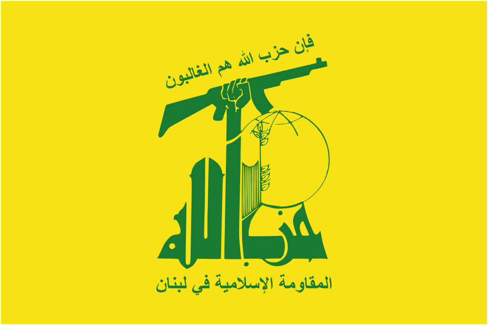
Overview
Hezbollah is a Lebanese shi'ite islamist political group and militant organization. Hezbollah arose as an extremist counterweight to both entrenched Amal interests and the Israeli Lebanon Iranian Israeli American IDF Israel Assad Regime Syria Iranian Hamas Lebanon Lebanon US Israel France
Ideology & Tactics
The beliefs of Hezbollah have been articulated in two manifestos, one written in 1985 and another in 2009. In its older 1985 manifesto, Hezbollah commended the Iranian United States Israel Lebanon Amal . Over the 1990s and 2000s, Hezbollah would drastically change as a group. The group's acceptance and joining of Lebanese politics, its growth as a conventional military threat, its de-facto governance of Southern Lebanon Israel American Iran Palestine Lebanon Lebanon Syria Islamic State
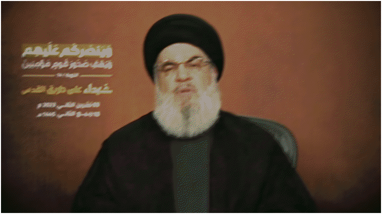
Fig 1. STILL FROM A NASRALLAH SPEECH FOLLOWING THE OCTOBER 7TH ATTACK IN ISRAEL c. NOVEMBER OF 2023
During the Israeli Lebanon Iranian IDF Israel Lebanon SLA
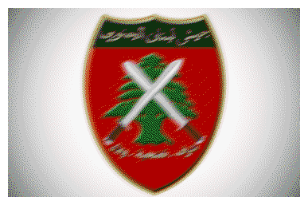
. In the first half of the 2000s, Hezbollah would continue to build up its military strength and rocketry. Hezbollah’s funding from Iran IDF Israel IDF Israel Iran Israeli Israeli IDF Israel Israel Syria Assad regime Israel Israel Notable Actions
• November 11, 1982 : A Hezbollah SVBIED blew up while ramming into an IDF Lebanon Israelis Israeli Hezbollah Israelis Israeli Israel Israeli Lebanon
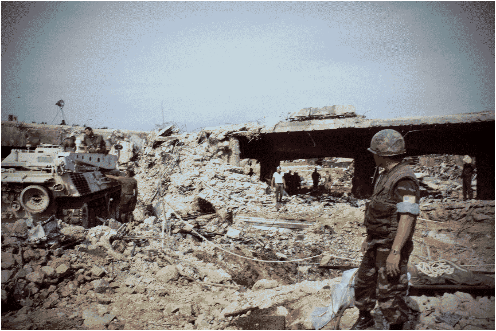
Fig 1. AFTERMATH OF A HEZBOLLAH SUICIDE BOMBING TARGETING A US MARINE BARRACKS IN BEIRUT, LEBANON, DURING THEIR PEACEKEEPING c. OCTOBER OF 1983
• April 18, 1983 : A Hezbollah American Hezbollah's Lebanon Hezbollah Iran Iranian
• October 23, 1983 : A series of suicide bombings rocked through Two French American Hezbollah Lebanon France's Israel Iran American Americans Lebanon
• September 20, 1984 : Hezbollah Iranian American US Americans Hezbollah
• December 25, 1986 : Hezbollah Jordan Saudi Arabia
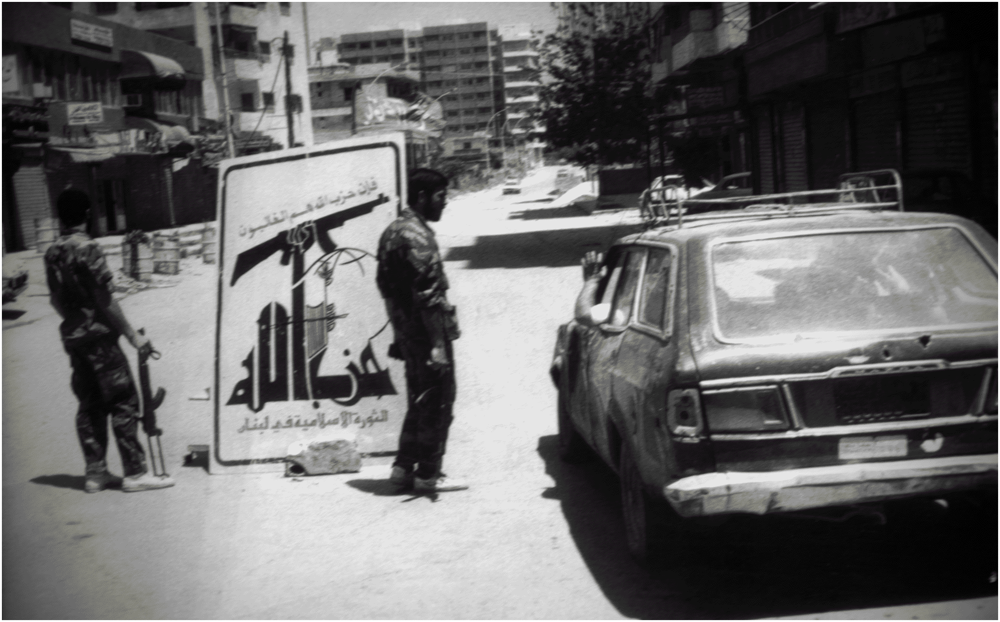
Fig 1. HEZBOLLAH MILITANTS SETTING UP ROADBLOCKS AND CHECKPOINTS IN SOUTHERN LEBANON DURING THE WAR WITH AMAL c. MAY OF 1989
• April 5, 1988 : Hezbollah Amal Movement. The conflict started when Iranian Hezbollah Amal officer and an American Amal responded by waging war against Hezbollah Lebanon Hezbollah Lebanon Amal .
• March 17, 1992 : A Hezbollah Israeli Argentina , and detonated the SVBIED. The attack killed 29 people and wounded over 240 others. This attack was Hezbollah's Israelis Argentinean civilians. After years of investigation, both Iran Hezbollah
• September 30, 1992 : Hezbollah IDF Lebanon Hezbollah
• July 25, 1993 : The IDF Hezbollah Israeli IDF Lebanon Hezbollah Hezbollah IDF United States
• July 18, 1994 : An operative working with a group affiliated with Hezbollah Argentina , killing 85 people and injuring over 300. This was the largest Hezbollah Lebanon Argentina . In the 30 years following the attack, various different Argentinean governments underwent an investigation sometimes including Iranian American Argentina 's court ruled that Iran
• April 11, 1996 : After Hezbollah Israel IDF Israel IDF Hezbollah Lebanon Hezbollah Israelis US IDF
• September 4, 1997 : Hezbollah IDF IDF Lebanon IDF IDF
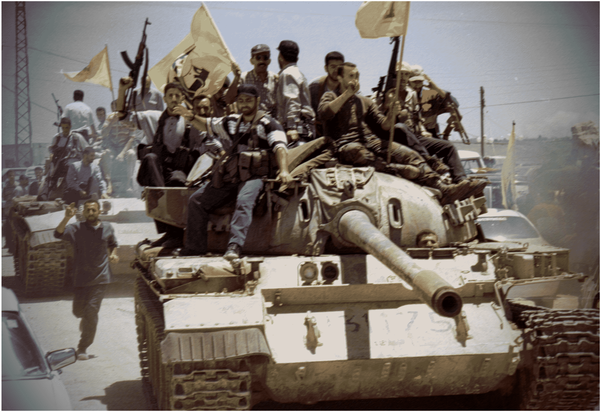
Fig 1. HEZBOLLAH FIGHTERS PARADING THROUGH KFAR KILA WITH A CAPTURED T-55 MBT FROM THE SLA FOLLOWING ISRAELI WITHDRAWAL c. MAY OF 2000
• May 24, 2000 : During the Israeli Lebanon Hezbollah Israel the South Lebanon Army (SLA) . The SLA collapsed at a rate faster than even Assad ANA Hezbollah Hezbollah SLA held towns, liberating brutal and oppressive prisons as SLA fighters withdrew into Israel Israel Hezbollah Israel
• October 7, 2000 : Only five months after Israeli Lebanon Hezbollah Israeli Hezbollah Israel Hezbollah Israel IDF Palestinian prisoners Hezbollah Israel
• February 14, 2005 : Former Prime Minister of Lebanon Hezbollah Syria Hezbollah Israel
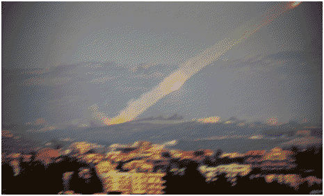
Fig 2. HEZBOLLAH LAUNCHES KATYUSHA MLRS ROCKETS AT ISRAEL FROM SOUTHERN LEBANON c. JULY OF 2006
• November 21, 2005 : In an attempt to perhaps stir up the same war that erupted only a year later, Hezbollah Israel Israeli
• July 12, 2006 : The largest armed conflict between Israel Hezbollah IDF Israel Lebanon Israelis Hezbollah Israel IDF Hezbollah IDF Hezbollah Israelis Israel Hezbollah Syria Hezbollah
• May 7, 2008 : Intense clashes erupted across Lebanon Hezbollah Lebanon Hezbollah Hezbollah Hezbollah
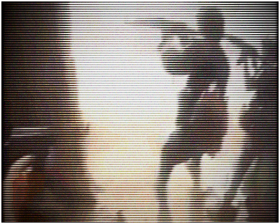
Fig 3. HEZBOLLAH MILITANTS CLEARING BUILDINGS IN AL-QUSAYR OF SYRIAN OPPOSITION FIGHTERS c. MAY OF 2013
• June 6, 2013 : Hezbollah Lebanon Syria Hezbollah SAA Lebanon Hezbollah Hezbollah
• March 17, 2014 : Thousands of Hezbollah Assad Regime's rebel Lebanon rebel rebel Hezbollah
• January 28, 2015 : Ten days after Israeli Syria Hezbollah Hezbollah IDF IDF
• March 26, 2015 : A Hezbollah Syria Hezbollah rebel
• September 25, 2015 : Hezbollah SAA rebel rebel Hezbollah rebel
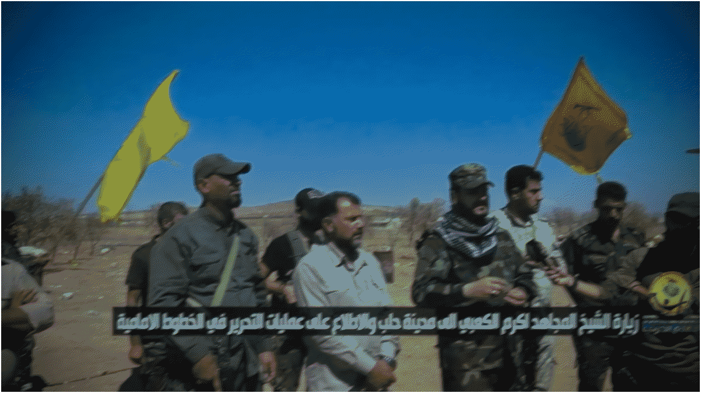
Fig 4. HEZBOLLAH AND FIGHTERS FROM IRAQ INTERVIEWED BY PROPAGANDISTS OUTSIDE OF ALEPPO CITY c. SEPTEMBER OF 2016
• December 22, 2016 : Assad's forces cleared and fully captured the major city of Aleppo from the myriad of opposition and rebel Hezbollah Syria Hezbollah rebel
• February 5, 2017 : During the Turkish military's offensive on al-Bab in the Aleppo countryside against the Islamic State SAA IS Hezbollah
• March 2, 2017 : After approximately two years of intense fighting and tit for tat offensives, the Syrian army, in conjunction with Hezbollah Russians Hezbollah SDF IS
• October 25, 2017 : Hundreds of Hezbollah Assad Regime's Islamic State Hezbollah Islamic State
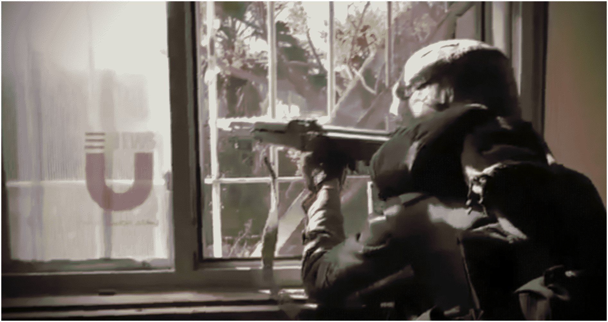
Fig 5. HEZBOLLAH MILITANTS ASSAULTING SARAQIB IN RIF IDLIB DURING OFFENSIVES AGAINST HTS c. MARCH OF 2020
• July 19, 2018 : Hezbollah HTS Hezbollah HTS SAA
• February 5, 2020 : Hezbollah Assad Regime's HTS rebel Lebanon Iranian SAA HTS
• October 14, 2021 : In the aftermath of the 2019-2021 polycrisis in Lebanon Hezbollah Hezbollah Hezbollah Hezbollah
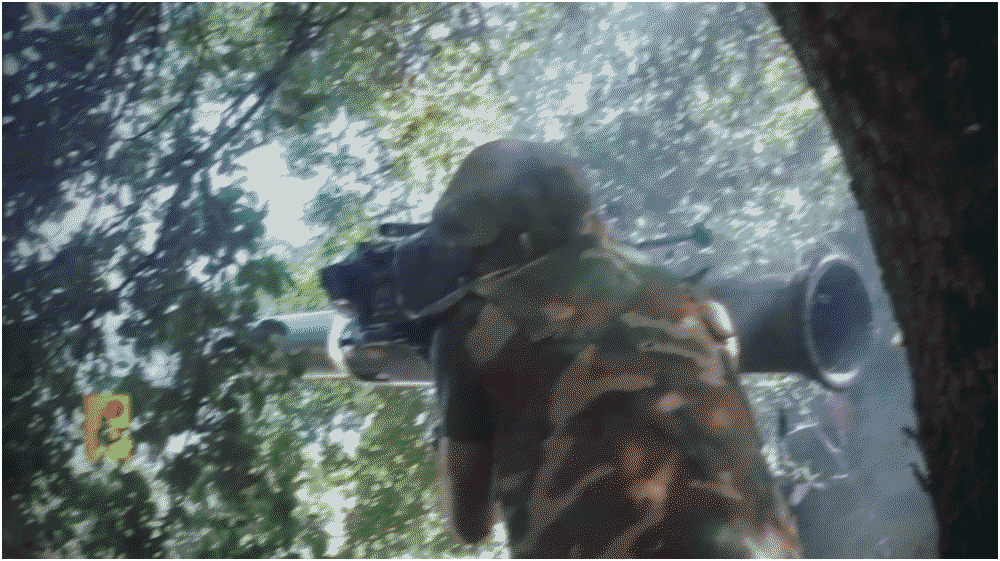
Fig 6. HEZBOLLAH TOOPHAN IRANIAN ATGM FIRED AT AN ISRAELI MBT c. AUGUST OF 2024
• October 8, 2023 : After the Palestinian group Hamas Israel Hezbollah Israel Israel Lebanon
• October 1, 2024 : The month of September 2024 marked perhaps one of the most eventful in Hezbollah Israeli IDF Lebanon Hezbollah IDF Lebanon IDF Hezbollah Hezbollah IDF Hezbollah Israel IDF Iran US Israel Lebanon
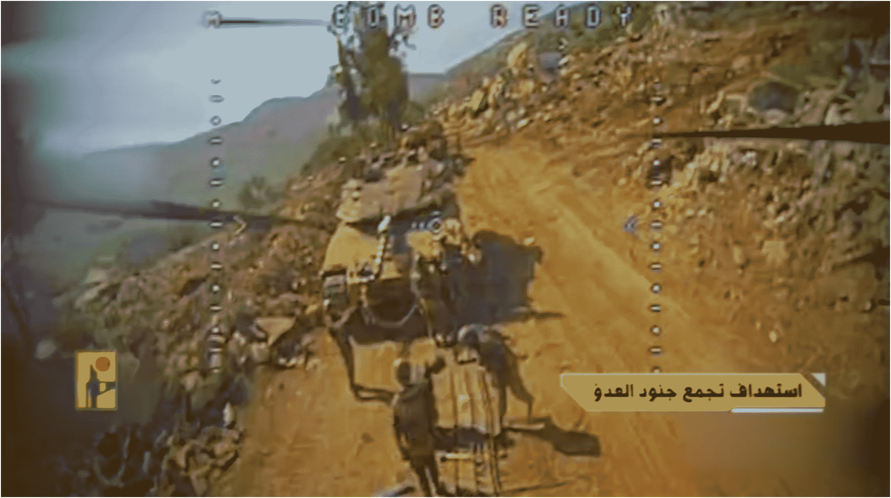
Fig 7. HEZBOLLAH FPV DRONE TARGETS IDF MERKAVA MBT IN TAYBEH, SOUTHERN LEBANON c. APRIL OF 2026
• December 7, 2024 : Naim Qassem's Hezbollah Syria Lebanon HTS Hezbollah Israel Hezbollah Israeli Iran
• March 2, 2026 : On February 28, 2026, Trump's United States Israel Iran Iran US Israel Hezbollah Israel Lebanon Israeli Hezbollah Israel Lebanon Lebanon Iran
Sources
• Hezbollah: A Short History by Augustus Richard Norton
• https://www.hintergrund.de/wp-content/uploads/2015/09/15-The-New-Hezbollah-Manifesto-Nov09.pdf
• https://www.nytimes.com/2014/04/09/world/middleeast/muslim-shrine-stands-as-a-crossroads-in-syrias-unrest.html
• https://www.jstor.org/stable/pdf/2676479.pdf?refreqid=fastly-default%3A30557e3c59f2918b536ccaced933a092&ab_segments=&initiator=recommender&acceptTC=1
• https://www.utep.edu/liberalarts/nssi/_files/docs/an-analysis-of-hezbollah-s-use-of-irregular-warfare-mulhern.pdf